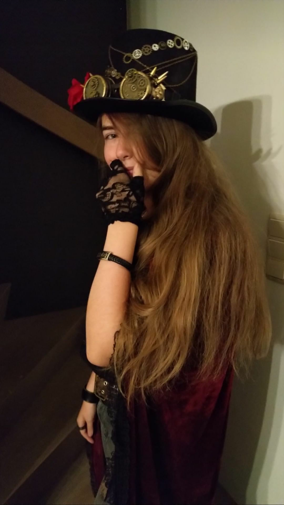
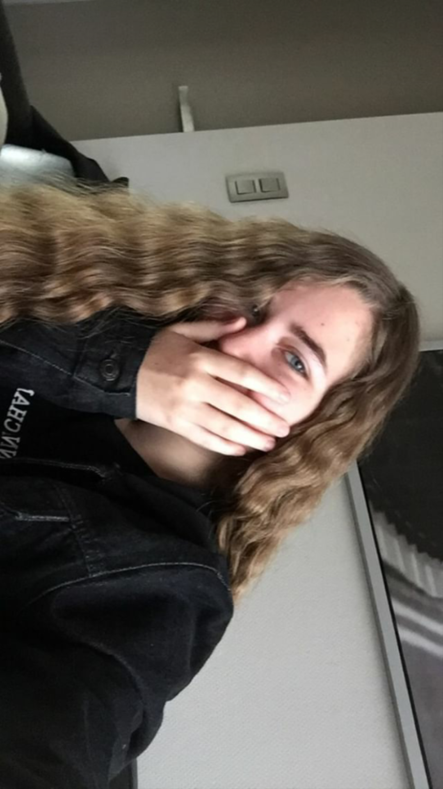
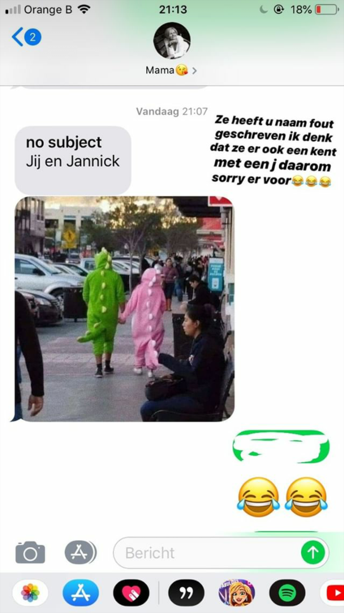
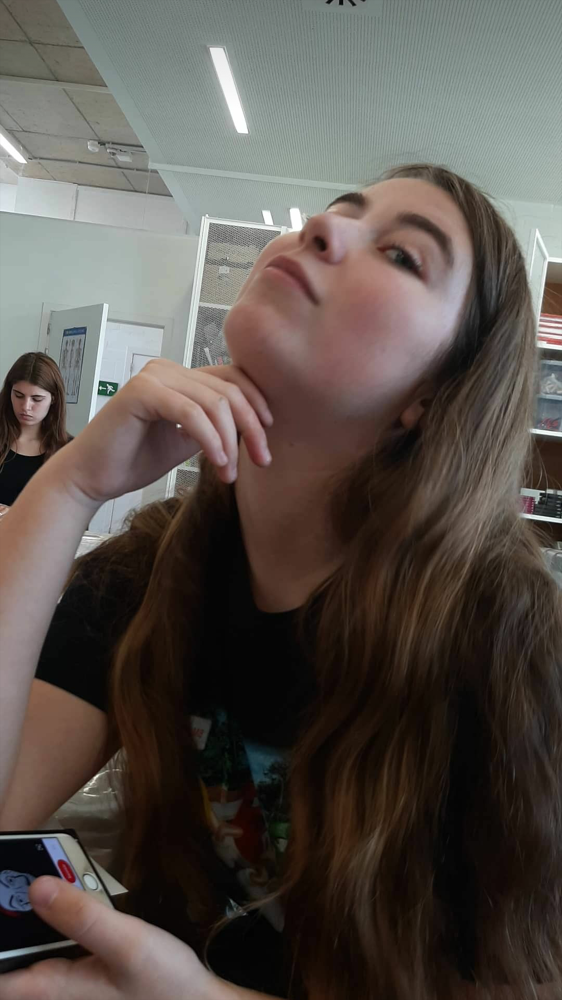
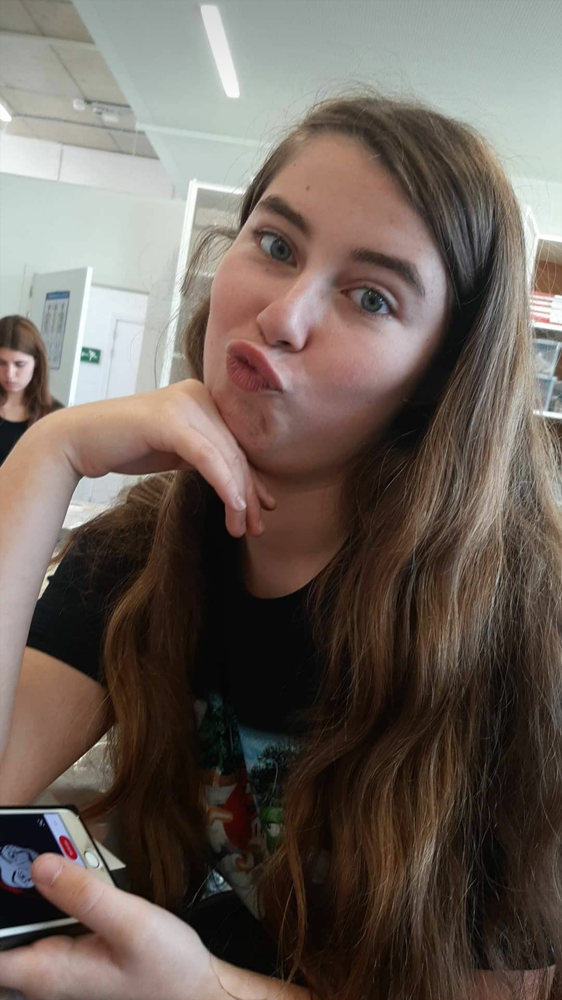
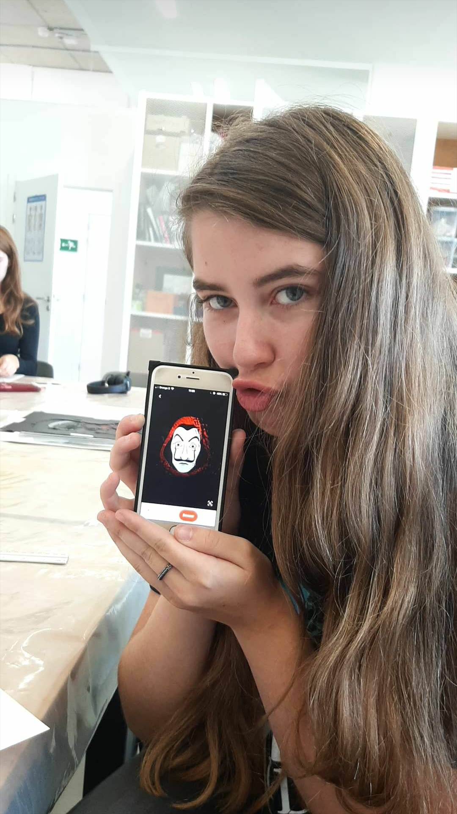

Home
Er was eens..
Gedichten en teksten
Vriendschap
Random
Hi
babygirl
You are so cute
Likeable
Lovely
Helpful
Friendly
Strong
Caring
Sweet
Beautiful
Nice
Corona is saaii. Ik mis mijn beste vriendin :(
Hier wat prachtige foto's, omdat het moest ;) xx





